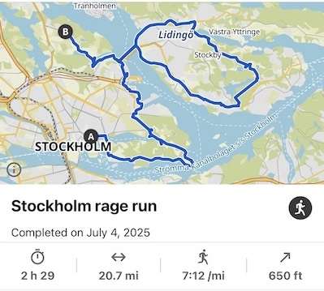

Stockholm
July 27, 2025
I got in an argument with hotel staff a few weeks ago in Stockholm. I ran afterward to blow off some steam. Once I started I just kept going; I guess I decided I wouldn't stop until I'd burned out all my grievances. How long did that take? Turns out it takes 21 miles and 2.5 hours before my body hurts too much for me to stop caring about an argument.
>
I didn't even feel that much better afterward. I suspect I just wanted to replace one kind of pain with another, one that's simpler and easier to understand. Physical pain doesn't crack my emotional dam, against which a foaming, crying river of dark thoughts are always pressing.
Someone once told me that the way you compete (physically) is the way you live. I thought about that a lot during my rage run. When I was in high school, my national backstroke rank dropped from 103 to 309, from freshman to senior year. I obsessed over every hundredth of a second lost to nameless strangers in Nebraska. Every day was a grind to fix myself. Rotation's off; elbow's too low; head's off-center; core's not engaged; breathing pattern's off; shoulder's dropping. And then one day I learned that the top ~1,700 football players in the country sign lucrative contracts with the NFL. Both sports have hundreds of thousands of amateur participants, yet here I was smashing my body to pieces every day in the wrong sport. Meanwhile some mediocre high school football player not even in the top 1,000 was being interviewed on ESPN.
I suppose that does reflect how I live though. An exercise in futility, always trying to fix parts of myself when maybe it would've been easier to have started off as someone else. If I wasn't so lazy, maybe I'd be making 7 figures like my brother; if I hadn't fucked around in my music lessons, maybe I'd be a decent pianist; if I wasn't so weak, maybe I could've made the Olympic Trials; if I wasn't so stupid and uncultured, maybe she wouldn't have left me; if I wasn't so selfish, maybe Pika would be happier and with a different family.
The thing is, we love winners, even though they're rarely likable people. They're invariably selfish and obsessive and moody. But no one cares. We hoist them up on a pedestal. We forgive them. We like them because they win. And I guess that's why I always feel adrift. I'm not and was never a winner in my professional, athletic, musical, academic, or personal life. Lazy, weak, clumsy, stupid, and bad--sometimes I think being a winner, just once, would be enough to erase the sin of being me.
I think of this Chinese proverb from time to time, 百折不撓, which roughly means "unyielding in the face of a hundred fractures." It's catchy, but I wonder how everyone else carries on. How can being human suck so much?
Blackpink is in town this weekend. I heard from a passerby that their concerts make her feel that life is worth living. Lately, the only time I feel that way is when I make myself hit rock bottom physically. I think the pain subtracts so much happiness that it overflows into euphoria. It happened the first time I tried swimming in open water, when I puked on the beach because it was so cold and my blood pressure was through the roof. It happened again in Stockholm when I was done with my run. I puked in the park from the pain of running an almost-marathon in sneakers: a horrible, disgusting feeling, yet I thought "I live for this." And it happened at work when my eyeballs felt like falling out after working straight from 6am to 6pm. I only get high from torturing myself.
百折不撓--I try my best. I really do try my best, but tomorrow always comes before I've had enough time to recollect myself. I slip on my happy face to verify my existence to coworkers, to friends, to family, to strangers. The same everyday.